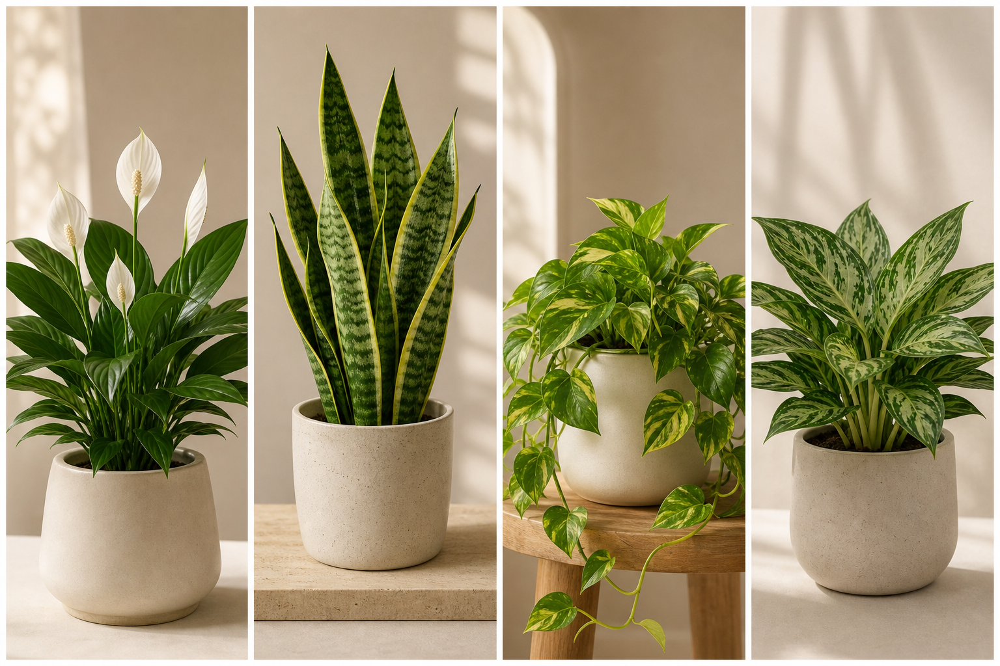
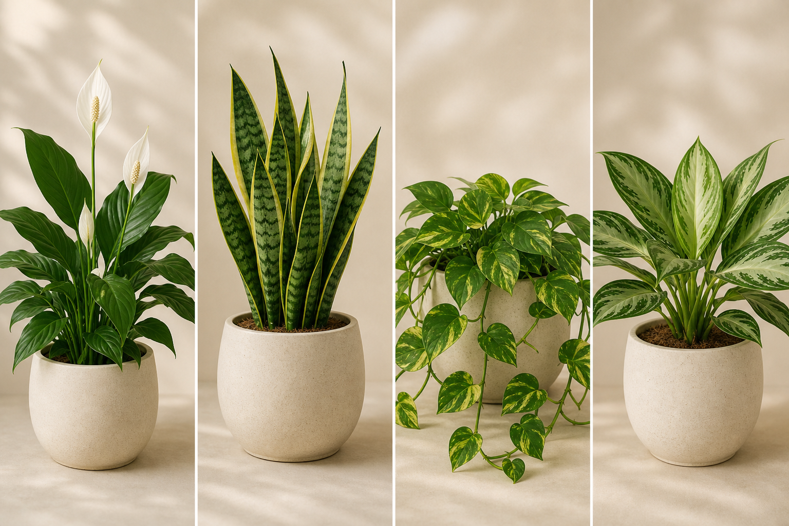
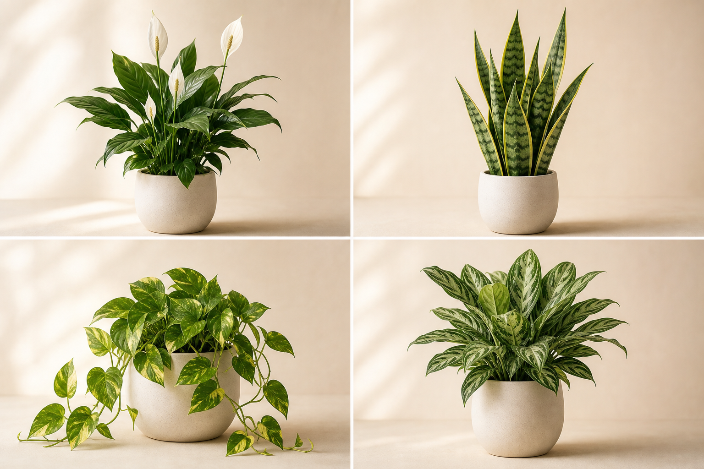
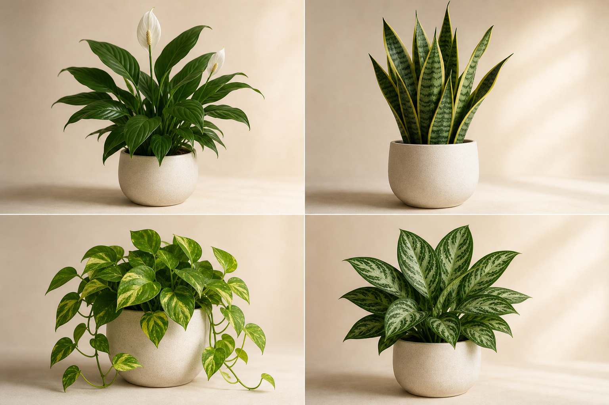
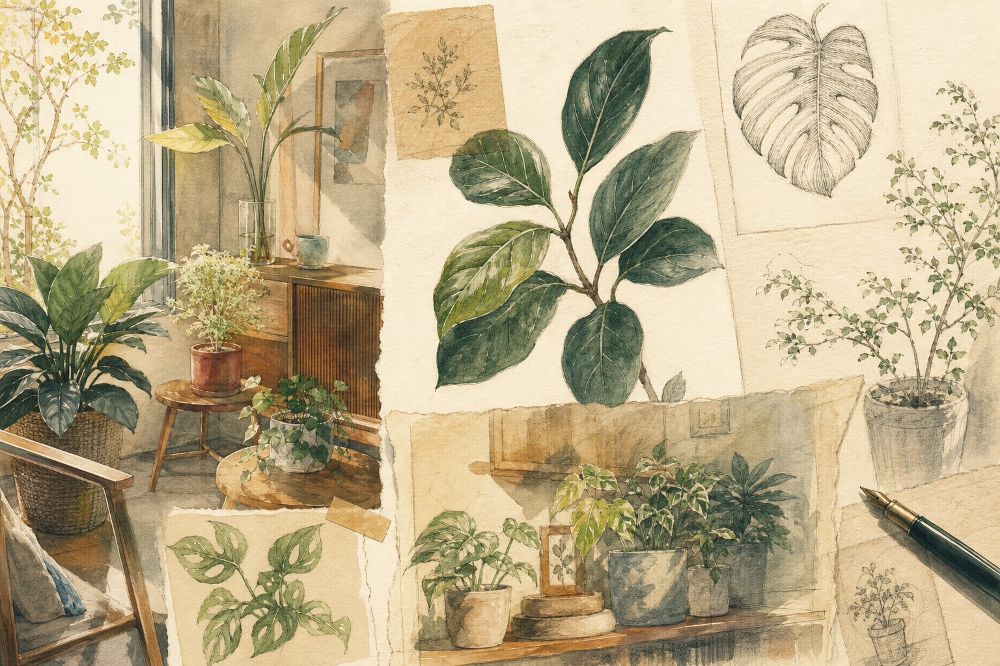
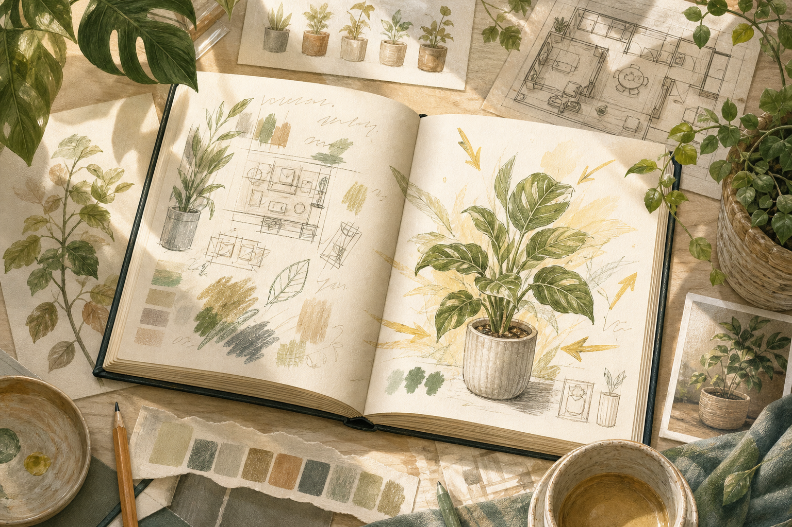
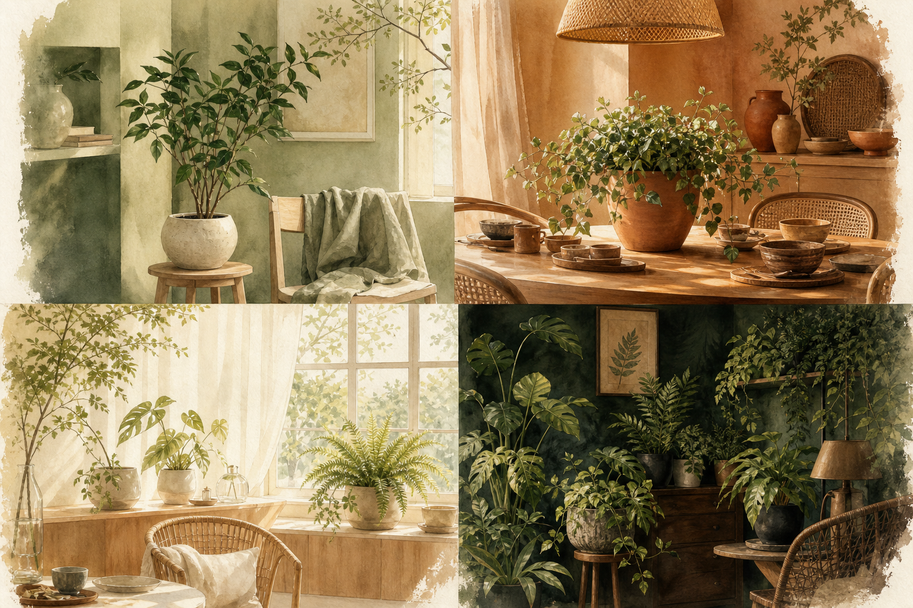
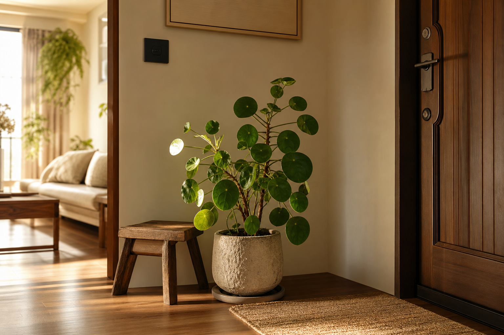

白鶴芋
光線：半陰到散射光｜澆水：土乾再澆｜難度：中低
白色佛焰苞有乾淨感，適合想讓角落安靜、柔和的人。
有時候，家需要一點慢慢陪伴你的生命感。
家裡有一個會生長的角落，空間就不只是被布置，而是多了一點可以停下來的節奏。
植物不需要很多話。它用光、葉影和新芽，讓你在回到家時，慢慢從外面的速度裡退下來。

有些人不是想買植物，
是想找回一個可以慢下來的早晨。
工作和生活壓力很大的時候，甚至頭有點痛、只想找個地方喘口氣時，植物會用很安靜的方式把人接住。早上整理陽台，看看今天有沒有開花、有沒有長大、有沒有冒出一顆新芽，那一小時不是任務，是重新開始。
植覺配想給的不是一份冷冰冰的清單，而是一種同頻感：原來有人也懂，家裡那一點綠，真的會讓人放鬆。
不知道從哪裡開始也沒關係。先選你最接近的狀態，植覺配會給你一個初步方向。
植覺配不只談風格，也會讓你看見植物本身：葉型、光線需求、照顧難度，以及它適合留在哪個角落。

白色佛焰苞有乾淨感，適合想讓角落安靜、柔和的人。

線條挺直，適合玄關、牆角或需要一點穩定感的空間。

葉片會慢慢延伸，適合窗邊、層架和想要綠意流動的地方。

葉色柔和又有變化，適合室內角落和不想太高維護的人。
好的植物配置不是把綠色塞進空間，而是讓視線、光線、動線與人的心情都找到停靠點。


植覺配不是只問你喜歡哪一盆植物，而是先看四件事：光、風、位置、照顧習慣。
很多人買植物時，先看它漂不漂亮、是不是流行、放在照片裡好不好看。但植物真正能不能留下來，常常不是由喜歡決定，而是由家的條件決定。
方位、光線、樓層、風、空間位置。
療癒、遮擋、香氣、安定感、好照顧。
主植物、中層植物、垂墜與盆器，一起形成配置。
先看你最想改變哪個角落。玄關要穩，書桌要安靜，餐桌要有日常感，陽台要真的站得住。


有點像心理測驗。顏色不是答案，但它會透露你想讓家變成什麼狀態。


選一個你現在最想改善的狀態，我們會先給你一個方向，再慢慢配出適合家的綠意。
先用直覺選，再用光線、風、照顧習慣校準，最後得到一份適合家的綠意方向。
結果頁用「推薦理由＋照顧條件＋擺放方式」呈現，讓人 5 秒內知道為什麼是這組植物。
白水木、福祿桐、斑葉非洲茉莉。形成高度、屏障與視覺中心。
虎尾蘭、粗肋草、孔雀木。補中段空隙，讓綠屏更穩。
黃金葛、吊蘭、蕨類。柔化底部，讓配置不僵硬。
每一種配方，都對應一種真實的居家狀態：光、風、照顧習慣，還有你想要的感覺。